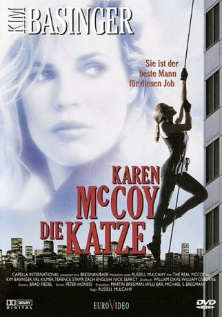

#11111 Karen McCoy - Die Katze
Alternativ: The Real McCoy (Englischer Titel)
 
 IMDB-Wertung: 5.5 / 10
IMDB-Wertung: 5.5 / 10  Metascore: 0
Metascore: 0 
Die einstige Meistereinbrecherin Karen McCoy wird nach sechs Jahren aus dem Gefängnis entlassen. Sie hat dem Verbrechen abgeschworen und will nur ihren Sohn wiedersehen, der nichts von der Existenz seiner Mutter weiß. Als Karen sich weigert, für den Milliardär Jack einen abenteuerlichen Coup zu landen, läßt der Karens Sohn entführen. Schließlich willigt die "Katze" in den Bankeinbruch ein. Als der Tag der Entscheidung gekommen ist, hält sie eine Überraschung für Jack bereit...
Jahr: 1993
Dauer: 100 Minuten
FSK: 12
Land: USA Studio: Universal PicturesTonspuren:
Untertitel:
Auflösung: 1080p (1920x1080) Größe: 5345 MB
Genre: Thriller, Drama, Krimi
Regisseur: Russell Mulcahy
Drehbuch: Desmond Lowden, William Davies, William Osborne
Soundtrack: Brad Fiedel
Darsteller:
 Kim Basinger als Karen McCoy
Kim Basinger als Karen McCoy Val Kilmer als J.T. Barker
Val Kilmer als J.T. Barker Terence Stamp als Jack Schmidt
Terence Stamp als Jack Schmidt Gailard Sartain als Gary Buckner
Gailard Sartain als Gary Buckner Raynor Scheine als Baker
Raynor Scheine als Baker Deborah Hobart als Cheryl Sweeney
Deborah Hobart als Cheryl Sweeney Andy Stahl als Mr. Kroll
Andy Stahl als Mr. Kroll Dean Rader-Duval als Lewis
Dean Rader-Duval als Lewis Marc Macaulay als Karl
Marc Macaulay als Karl David Dwyer als Guard
David Dwyer als Guard- Frank Roberts als Guard
- David Hart als Businessman
- Rebecca Wackler als Personnel Woman
 Rebecca Koon als Beautician
Rebecca Koon als Beautician- Stephanie Astalos-Jones als Woman at Laundry
 Jill Jane Clements als Lawyer
Jill Jane Clements als Lawyer- Edith Ivey als Neighbor
- Alex Van als Radly
- Polly W. LePorte als Stewardess
 Nick Searcy als Roy Sweeney
Nick Searcy als Roy Sweeney Afemo Omilami als Cab Dispatcher
Afemo Omilami als Cab Dispatcher- Bo Greigh als Cop (uncredited)
- Zach English als Patrick
- Pamela Stubbart als Kelly
 Norman Max Maxwell als Hoke
Norman Max Maxwell als Hoke- Peter Turner als Guard
- Robert Glover als Prison Guard
- Claude File als Prison Guard
- Henry Stram als Cashier
- Larry Black als Parole Officer
- Saundra Dunson-Franks als Waitress
- Jack Wilkes als Accountant
- Tom Even als Salesperson
- Al Hamacher als Mr. Katanich
- Eric Ware als Bank Guard
- Joe Washington als Newscaster
- Bill Crabb als Dispatcher
- Megan Hughes als Schmidt's Girlfriend
- Seneca W. Foote als Old Timer
- Lois Hanevold als Convenience Store Customer
- W. Clifford Klenk als Maitre D'
Datei: X:\1993\Karen McCoy - Die Katze (1993, FSK12, 1920x1080).mkv seit 24.04.2019
Festplatte: Gemischt-01+Anime
 Es gibt insgesamt 68 Filme in der Gruppe '1993'
Es gibt insgesamt 68 Filme in der Gruppe '1993'